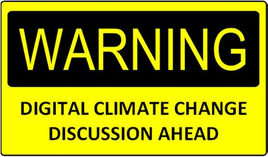
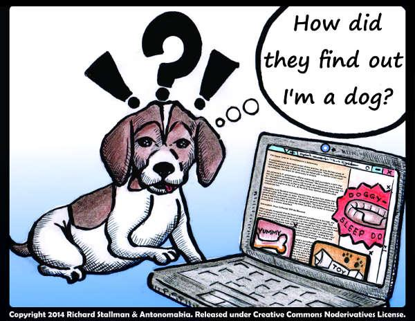

Nachdenken über den „digitalen Klimawandel“ kann eine große Bereicherung sein, aber auch unangenehme Folgen haben. Es kann helfen die
Welt der Medien besser zu verstehen und sich im Dschungel der vielfältigen Informationsangebote und Unterhaltungsmöglichkeiten besser zu
orientieren.
Es kann auch sein, dass manche Dinge zwischendurch kompliziert erscheinen und dass einflussreiche Leute keine Freude damit haben, wenn
Du Deinen Horizont über das erwünschte Maß hinaus erweiterst und eigenständig Deine Konsequenzen aus den Überlegungen ziehst.

Bild: Theo Hug [CC-BY]
Auf zu neuen Ufern
Kathi und Tobias haben neulich von Robin einen Tipp
bekommen. Auf der Social Media Plattform Kik soll es
viele Chatbots geben, mit denen man sich unterhalten
kann. Sie kennen und verwenden zwar einige Online-
Angebote wie WhatsApp und Snapchat, um sich mit ande-
ren auszutauschen, Bilder und Musik zu teilen oder
wichtige Hinweise weiterzugeben. Von Chatbots und so
Sachen haben sie zwar schon mal gehört, aber ausprobiert
haben sie so was noch nicht. Sie sind neugierig und finden
schnell den Download-Link, geben ihre Daten ein und los
geht’s.
Infobox 05i
Plattform: Plattformen sind „platte Formen“ aller Art, also
Dinge, Figuren und Gestalten, die irgendwie flach und zugleich in der einen
oder anderen Weise „erhöht“ sind, sodass bestimmte Aktivitäten ermöglicht
oder erleichtert werden.
Beispiele sind Aussichtsplattformen, Bohrplattformen,
Bahnsteige (platform in Englisch), Lernplattformen, Ölplattformen, Internetplattformen,
Kommunikationsplattformen, Werbeplattformen, Computerplattformen für Anwendungsprogramme, usw.
Es dauert auch nicht lange und sie entdecken den Bot
Shop mit vielen coolen Angeboten in Bereichen wie Mode
und Schönheit, Fun mit Freunden sowie Unterhaltung und
Lifestyle. Beim Translator Bot denken sich Kathi und
Tobias, dass man den auch in der Schule gut verwenden
könnte. Sie merken aber schnell, dass solche Tools im
Rahmen der digitalen Grundbildung keine Rolle spielen.
„Das ist auch gut so, denn die digitale Klimaerwärmung
geht so schon viel zu schnell voran“, hören die beiden von
einer Lehrperson, als sie entschieden hatten, selbst einen
Bot zu entwickeln und bei der Organisation von Parties
auszuprobieren. Kathis ältere Schwester kennt sich gut mit
Apps und Software-Anwendungen aus. Sie hat versprochen,
den beiden zu helfen. Tobias kleiner Bruder kann
gut malen und zeichnen und hat sicher super Ideen für
einen passenden Avatar. Und nachdem sie dieses Projekt
auch ohne finanzielle Unterstützung realisieren können,
sollte einem erfolgreichen Medienexperiment nichts im
Wege stehen.
Infobox 05ii
Tools:
Werkzeuge, Arbeitsmittel, Hilfsmittel, Instrumente
oder Geräte; im Zusammenhang mit digitalen Medi-
en geht um Werkzeuge zum Programmieren oder
nützliche Hilfsprogramme
Avatar:
Kunstfigur in der Medienwelt oder eine grafische
Darstellung im Internet, die eine physische Person
verkörpert, eine künstliche „Person“ in Form einer
grafischen Stellvertretung eines Menschen aus
Fleisch und Blut.
Ergänzender Hinweis: Im Hinduismus werden unter
Avatara das „Herabsteigen“ und die Verkörperung
einer Gottheit auf der Erde verstanden.
Social Media:
Webseiten, Programme und Apps, über die Nutzer
und Nutzerinnen Inhalte teilen und sich vernetzen
können.
Hinweis: Austausch und gemeinschaftliche Nutzung von Social Media
Plattformen haben nur manchmal mit den sozialen Anliegen gemeinnütziger
oder karitativer Vereine zu tun. Für die Anbieter steht meistens
die Verwertung der Datenströme, Profile und Nutzungsgewohnheiten im Vordergrund.
Kurze Zwischenfrage
Sie haben viel Freude beim Basteln des Bots und auch ihre
Freunde und Freundinnen wollen wissen, wie so was geht.
In einer ruhigen Minute fragt Tobias Kathi: „Hast Du
verstanden, was mit der Bemerkung von wegen ‚digitaler
Klimaerwärmung‘ gemeint war?“ „Nicht wirklich“, antwortet sie und setzt nach: „Vom Klimawandel haben wir
ja schon einiges gehört, aber da ging es doch um den An-
stieg des Meeresspiegels, die vielen Stürme und Überflutungen und Temperaturanstiege und so Sachen.“ „Ja, aber
so ganz klar scheint das auch nicht zu sein, wenn ich daran
denke, dass da sogar in der Wissenschaft gestritten wird,
was an der Sache wirklich dran ist“, meint Tobias und
ergänzt: „Und wenn wir nun mitten in einem digitalen
Klimawandel sind, was bedeutet das für uns? Sollten wir
uns da vor Überflutungen schützen oder warm anziehen
oder Solar-Tablets kaufen oder was?“ „Solar-Tablet hab
ich noch keines gesehen“, sagt Kathi, „aber wir können ja
nachfragen und herausfinden, ob an dem Thema mehr
dran ist als die bekannten pädagogischen Spaßbremsen
vermuten lassen.“ Kathi und Tobias überlegen selbst und
horchen sich im Kreis von Bekannten und auch im Lehr-
körper um.
Ein bunter Strauß von Antworten
Tobias und Kathi stoßen auf sehr unterschiedliche Ein-
schätzungen zum Thema „digitaler Klimawandel“:
Ja, da ist was dran. Früher war es nur für die Zeitungsleu-
te, Radiomacher oder Film- und FernsehproduzentInnen
möglich, mit ihren Angeboten wirklich viele Menschen zu
erreichen. Heute ist es für viele Menschen möglich, über
eigene Kanäle Nachrichten massenhaft zu verbreiten oder
gezielt viele andere gleichzeitig zu kontaktieren. Das gilt
auch zum Beispiel auch für Jugendliche, die tolle Musik
machen. Wenn Du es nicht glaubst, dann schau doch mal
Sina auf YouTube zu, wie sie auf ihren Drums loslegt – da
schaut nicht nur Ian Paice von Deep Purple alt dagegen
aus.
Infobox 05iii
Chatbots:
Programmierte Maschinen, die mit uns sprechen
oder schriftlich kommunizieren; solche „Dialogsysteme“ werden oft mit Avataren kombiniert; sie funktionieren auf dem Hintergrund gespeicherter Frage-
Antwort-Sequenzen und Programmen, die versuchen unsere „natürliche Sprache“ nachzumachen
Social Bots:Das sind programmierte Boten, die ähnlich wie
Chatbots funktionieren und im Auftrag von Menschen Nachrichten und Meinungen in Social Media
verbreiten und verstärken. Sie können texten,
kommentieren, liken und Tweets weiterschicken.
Auf diese Weise können viele Menschen politisch
oder in ihrem Kaufverhalten beeinflusst werden.
Tweet: Kurze Nachrichten, die über den Dienst der Plattform Twitter verbreitet werden. „To tweet“ bedeutet
auf Deutsch „zwitschern“.
Die Medienlandschaften haben sich komplett verändert.
Fragt eure Großeltern und auch eure Eltern, wie sie sich
kennengelernt haben, wo sie nachgeschaut haben, wenn
sie was wissen wollten, wie sie untereinander und mit
ihren Freunden und Freundinnen in Kontakt waren, wie
sie musiziert haben oder Musik gehört, wie sie Nachrich-
ten aus anderen Ländern bekommen haben und in welcher
Weise sie mobil waren!
Übung 05a - Einzelarbeit
Reflexion und Recherche
Suche eine aktuelle Quelle in der Bibliothek und
eine Quelle im Internet zum Thema „Klimawandel“ und notiere die Antworten
auf die Fragen:
Inwieweit stimmen die verschiedenen Quellen
überein und inwieweit stimmen die Quellen nicht überein?
Wie schätzt Du die Qualität der Quellen ein?
Welche Anregungen und Empfehlungen werden
gegeben, wie wir mit Klimaveränderungen umge-
hen können
Den digitalen Klimawandel kann niemand mehr aufhalten.
Das ist wie mit der globalen Klimaerwärmung. Im einen
Fall steigen die Durchschnittstemperaturen und das geht
nun eben schneller als je zuvor in der Erdgeschichte. Im
anderen Fall gibt es auch kein Zurück mehr: Die digitalen
Medien durchdringen alles – angefangen von der Verwal-
tung der Geburtsurkunden bis zu den Online-Friedhöfen,
von der beruflichen Arbeit bis zum Freizeitvergnügen,
usw.
„Digitaler Klimawandel“, was soll das denn sein? Denk
doch an die Veränderungen in der Geschichte: Ganz früher wurde was in Stein gemeißelt oder auf Papyrus ver-
breitet. Mit dem Buchdruck wurden mit der Zeit auch
mehr Leute erreicht als mit den Reden auf den Marktplätzen und in den Kirchen. Tablets gab es schon immer –
denk an die Tontafeln der Assyrer oder die Schultafeln
Deiner Urgroßeltern! Immer wenn Medien Umbrüche in
der Gesellschaft und der Kultur mit sich bringen, gibt es
viel Lärm: Die einen freuen sich über ihre Macht und
Geldquellen und die anderen warnen vor dem Untergang.
Die Rede von einem digitalen Klimawandel ist doch nur
Geschwätz und Wichtigtuerei von einigen wenigen
Übung 05a - Einzelarbeit
Reflexion
Was fällt Dir selbst ein zum Stichwort „digitaler
Klimawandel“?
Notiere die Einfälle in Form von Stichworten oder
kleinen Skizzen. Beantworte dann die folgenden Fragen:
Wenn Du an Deine Schule denkst: Wie würdest Du
das Schulklima beschreiben? Überlege, was im
Moment sagbar ist und behalte anderes für Dich.
Wenn Du kurzfristige atmosphärische Veränderun-
gen in der Schule in Form eines Wetterberichts an-
sagst, wie sieht die Vorhersage aus? Sonnige Auf-
hellungen, heiter bis wolkig, stellenweise Schauer
und im Gebirge Gewitter, wechselnd leicht bewölkt,
heiter, keine Aussicht auf Besserung, usw.?
Die Stimmung und die Atmosphäre in der zwischen-
menschlichen Kommunikation werden manchmal als
Geprächsklima umschrieben. Gelegentlich berich-
ten Menschen vom Arbeitsklima in dem Betrieb, in
dem sie tätig sind.
Was verbindet und was unterscheidet die verschie-
denen Redeweisen von „Klima“?

Bild: Richard Stallmann/Antonomakia, https://www.gnu.org/graphics/dog.small.jpg[CC-ND]
Also ich weiß nicht, der Vergleich hinkt mit dem Klimawandel hinkt gewaltig. Ist das nicht eher umgekehrt? Beim
Klimawandel haben wir ein Problem der Erwärmung, mit
dem wir zurechtkommen müssen. Und beim digitalen Klimawandel haben wir es doch mit zunehmender Kälte in
unserer Gesellschaft zu tun. Ich kann aber nicht sagen,
wie sehr das mit digitalen Entwicklungen zusammenhängt.
Denn Kälte gibt es ja auch in der Face-to-face Kommunikation und manche sagen, dass schon die Massenmedien
des 20. Jahrhunderts eine Zunahme gesellschaftlicher
Kälte befördert haben. Wenn alle nur noch auf ihre Bildschirme starren, fehlt sicher den meisten die Wärme, die
doch alle irgendwie brauchen, um sich wohlfühlen zu
können.
Digitaler Klimawandel? Eine interessante Wortspielerei:
Einerseits werden wir immer mehr überflutet mit Informationen und Unterhaltungsangeboten. Wir scheinen ohne
Smart Phone nicht mehr leben zu wollen. Selbst in armen
Ländern und in vielen Gebieten fernab der großen Städte
gibt es mobile Internetzugänge. Andererseits spielen sich
viele Entwicklungen im Hintergrund ab: Wir wissen nicht
genau, was mit unseren Daten passiert oder welche Überwachungskameras im öffentlichen Raum unsere Gesichter
erkennen können. Ein privates Leben scheint es keines
mehr zu geben – irgendwer kann immer was machen mit
deinen Datenspuren. Dem Mähroboter können wir sagen,
wann er aktiv sein soll, aber wer versteht schon, wie der
molekulare Propeller eines Nanobots funktioniert, der nur
ein paar Millionstel Millimeter groß ist?
Das ist doch alles komplett widersprüchlich: Die einen
sagen, dass noch nie so viele Bücher verkauft worden sind
wie heute und die anderen reden ständig vom Aussterben
der Bücher und beschreiben Buchhandlungen als Wüsten.
Das muss man doch viel genauer anschauen, bevor man
da von einem „digitalen Klimawandel“ schwadroniert!
Super, ich finde diesen digitalen Klimawandel toll: Im
Netz kann ich total viel lernen. Ich finde es genial, die
Aktionen von Fabio Wimmer oder die Lausbubenstreiche
von KsFreakWhatElse auf YouTube immer gleich mitzubekommen. Und erst Viktoria Sabrina: Woher sollte ich
sonst die lässigen Beauty- und Mode-Tipps bekommen? In
der Schule hörst du von alledem rein gar nichts.
Einen digitalen Klimawandel gibt es nicht – es gibt digitale Technologien, die immer mehr miteinander vernetzt
werden und sehr leistungsfähige Softwareprogramme, die
viele Aufgaben im Hintergrund erledigen. Wir sind alle
sozusagen „Programmierte“ geworden, die nicht nachvollziehen können, wie die Bilder auf den Bildschirmen
zustande kommen, wie mit digitalem Geld gehandelt wird
und wie der Datenverkehr geregelt ist und wer die Regeln
ungestraft verletzen darf.
Ja, wir sind mitten drinnen in einem digitalen Klimawandel. Die meisten haben das noch nicht verstanden und tun
so, als könne man mit einem Kompass von gestern im
Meer von morgen die eigenen Kursziele erreichen. Es
wird noch ein böses Erwachen geben, wenn die Roboter
uns noch mehr Arbeiten abnehmen und 10, 20 Unternehmen reicher als die reichsten Staaten der Welt sind. Nicht
auszudenken, was passiert, wenn weiterhin die neuen
Technologien und globalen Konzerne auf Kosten von uns
und der Menschen in armen Ländern gefördert werden.
Wir müssen endlich bereit sein, unseren Wohlstand mit
denen zu teilen, die nur wenig oder gar nichts haben.
Übung 1c - Gruppenarbeit: Befragung und Dokumentation
Tut euch zu zweit als Tandem oder zu dritt in einer
kleinen Gruppe zusammen und bereitet eine münd-
liche Kurzbefragung von drei oder vier Personen
vor. Überlegt, wen ihr fragen könnt, wo und zu wel-
cher Zeit das gut klappen kann und von wem ihr
interessante Antworten erhofft. Wählt Leute aus, die
unterschiedlich alt und in verschiedenen Berufsfel-
dern tätig sind. Achtet auch auf das Geschlecht und
andere Aspekte, die eures Erachtens einen Unter-
schied machen können.
Die drei Forschungsfragen lauten:
Was fällt Dir / Ihnen zum Stichwort „digitaler
Klimawandel“ ein?
Welche Dinge sind Dir / Ihnen dabei besonders
wichtig?
Was sollte Deiner / Ihrer Ansicht nach in die-
sem Zusammenhang getan werden?
Notiert die Antworten auf einem Block. Wenn die
Befragten einverstanden sind, könnt ihr das Interview auch mit dem Handy aufnehmen und die Antworten anschließend verschriftlichen.
Fasst die Antworten kurz zusammen:
Gibt es Gemeinsamkeiten?
Inwiefern unterscheiden sich die Antworten?
Sind auch Antworten dabei, wie sie in den Einschät-
zungen zum Thema „digitaler Klimawandel“ doku-
mentiert sind, die Kathi und Tobias erhalten haben? Oder gehen Antworten in eine andere Richtung?
Gibt es auch welche, die für euch überraschend,
erfreulich oder ärgerlich sind?
Das ist eine Zwischenüberschrift
Das ist die weitere Geschichte.
Übung 01b - Selbstkontrolle
Überlege, welche Lizenz Du gerne verwenden würdest.
aber mach schnell!
Das ist der dritte Teil der Geschichte.
Infobox 01 ii – Video, Clip, Spielfilm
Der Begriff „Online-Video“ soll als Überbegriff für alle
Filmformate dienen. Clips sind sehr kurze Filme oder
Filmsequenzen (sinnvolle Abschnitte). Spielfilm ist ein
Überbegriff für Formate, die eine erfundene Geschichte er-
zählen. Dazu gehören Kinofilme, Kurzfilme und solche, deren
Handlung sich in weiteren Folgen fortsetzt—wie Fernsehse-
rien. Daneben gibt es Dokumentarfilme, die sich einem
Thema widmen, und Reportagen, die direkt vom Ort des
Geschehens berichten.